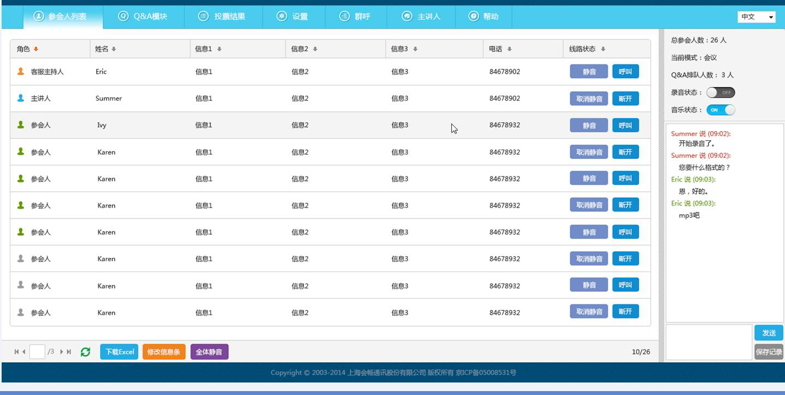

会畅通讯发布BizConf Event Call V2.0 打造“高端定制”电话会议新体验
-
 媒体报道
媒体报道
- 2017-08-09
媒体报道
近日，云视频会议领导者会畅通讯发布一款更新产品BizConf Event Call V2.0，提升了电话会议最大方数，进一步增强了电话会议服务质量，将电话会议推向“高端定制”的巅峰，这标志着形式单一的电话会议在互联网、云计算时代实现了新的突破，向满足企业多元化需求晋升。
BizConf Event Call是一种可预约、大容量、VIP人工在线的电话会议服务，会议全程有专业的会议客服人员协助主持整场会议，从会前设计准备到“实战演练”再到会议的圆满结束，使企业会议无后顾之忧。
BizConf Event Call V2.0， 电话会议巅峰之作
对于参与人数众多的大型会议来说，“如何保障良好的会议秩序”“如何保证会议的严谨和流畅以及会议数据的安全性”成为不少企业开展语音会议的痛点。
会畅通讯BizConf Event Call V2.0的发布，被视为攻克上述痛点的巅峰之作，不但能够确保大型重要的电话会议得到应有的重视，而且会议全程由全球服务5年以上经验的，最资深，最专业的会畅通讯客服团队按照最高级别标准严格执行，带给用户快速稳定、简单灵活的电话会议体验。支持中英双语服务，服务水平达到世界一流。全球化部署，支持上千方大方数会议
一直坚持贯彻全球化部署的会畅通讯，服务网络已遍布150多个国家和地区，不管参会人员分散在哪里，国际会议应用解决方案都能让国际伙伴顺利加入电话会议。全新的BizConf Event Call，采用人工接引用户入会，会议私密级别更高，支持300方的大方数电话会议。如需更高方数的人工电话会议，推荐用户使用BizConf Event Plus，支持定制个性化的自动语音问候，适合人数众多的会议提高入会效率，支持EventCall中的所有功能，支持上千方的大方数电话会议!
实践应用中，会畅通讯高端定制电话会议已为企业级用户解决了诸多沟通困窘。总部位于伦敦的国际银行，主要业务遍布亚洲、非洲和中东市场，此前面临着会议组织流程复杂、覆盖区域广、信息量大、保密性高等沟通协作上的挑战，尤其是理财部门，需要定期汇报贷款客户的生产经营状况、管理状况、资产负债等方面的最新动态，而使用BizConf Event Call后，上述问题得到充分解决，大型金融会议全流程皆可掌控，多重安全管理机制与各区域会议相互独立机制保障了会议信息百分百保密，并极大程度提高管理效率。
操作简单，零基础一步入会
此次，BizConf Event Call在产品设计方面将“一步入会”发挥到极致，即使参会人从未体验过产品，也可以轻松加入。系统配备了两种方式供用户入会：自主拨入，用户主动拨打提供的号码由会畅的会议服务专员接引用户入会;外呼接入，由会畅的会议服务专员对参会人进行外呼，参会人接起电话即可入会。
功能贴心，人性化设计注重舒适
友好接待：BizConf Event Call人性化设计给予参会人VIP至尊待遇，同时为了保障会议的安全，客服会对每位参会人进行会议信息的审核。
会议等待：可定制会议欢迎词与等待音乐，为会议营造轻松氛围。
讲座模式：发言期间，所有嘉宾线路都设为静音，以降低背景噪声，令会议发言人在传达信息时不受干扰。
会议互动：会议组织者无需担心发言无序，可通过主持人视图(Leader View)看到待发言人，排序谁先谁后，控制发言时间。
会议管理：提供录音回听、WAV存档及FTP下载，增加问答环节、投票和小型讨论室，不仅让语音会议更有趣，还为企业搜集了相关数据。
专属主持人：经过专业培训上岗的客服主持人，为会议全程提供优质的画外音服务，为高端会议增添庄严色彩。
安全稳定，11年成熟运营经验更可靠
会畅通讯成立于2006年，是最早涉足企业多方通信领域的服务商之一，11年来专注为企业提供高品质的视频会议、网络直播、电话会议和网络会议等云视频会议服务，致力让世界范围内每一个人都能随时随地建立最简单的沟通与协作。
成熟的技术支持、严格的运营管理、优秀的服务团队使得平台具有99.99% 的网络可靠性，此外，人工监控也为保证会议的机密安全提供了有力支撑。参会人必须向操作员提供之前确定的文字或代码以加入会议，密码限制了无关人员的出席;会议锁定功能，也可使客户能在安全的环境中讨论机密信息。
此次会畅通讯推出Bizconf Event Call V2.0是对传统电话会议的极致升级，会畅通讯对用户体验、完美性能的追求永无止境。未来，会畅通讯将继续秉承自主创新原则，不断丰富产品体系，不断优化技术支持，为全球用户打造更高效的沟通和协作方式。